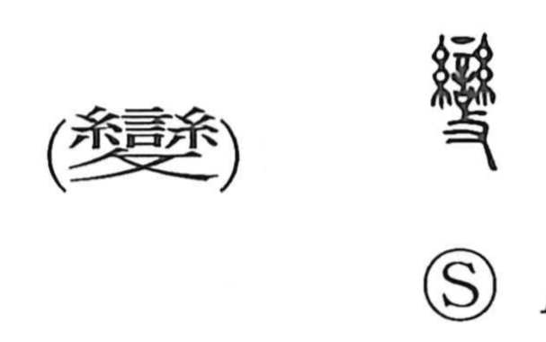

Explanation
変 is the simplified form of 變. Its fuller upper element is 䜌: 言, a solemn oath, flanked by hanging thread ornaments. 攴 below is a hand wielding a striking implement. The action is directed against the ornamented oath text or receptacle.
Striking the object breaks the existing commitment and compels an alteration. The formation belongs to a group of rites in which a blow was thought capable of changing a harmful or binding condition. Related formations of 改 and 更 apply a comparable action to other ritual objects.
From changing an oath come alteration and replacement, then disturbance, rebellion, or a major disruption. The character can also describe an extraordinary or uncanny event, something that departs from the expected course. Its broad range of ‘change’ develops from a specific act of ritual intervention.